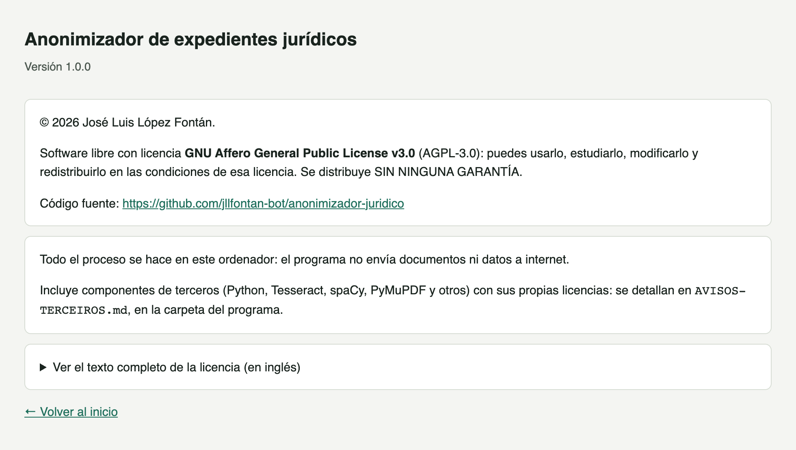
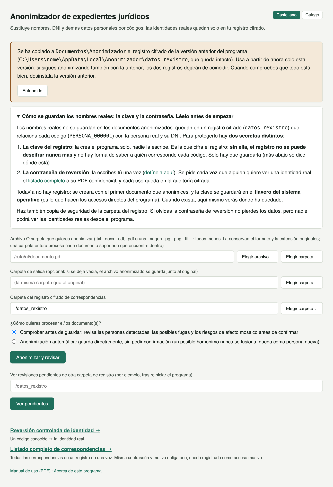

Guía de instalación · Anonimizador de expedientes jurídicos
Instalación desde la Microsoft Store, paso a paso
El programa se instala como cualquier otra aplicación de la Microsoft Store y lleva dentro todo lo necesario (Python, OCR, librerías y modelo de idioma): no hay que instalar nada más, y después funciona sin conexión a internet. Incluye dónde quedan tus datos, cómo pasar desde la versión anterior del programa, verificación final, solución de problemas habituales y un apéndice con los procedimientos legales y organizativos a tener en cuenta si este sistema se va a usar de forma continuada.
SistemaWindows 10 (versión 2004 o posterior) o Windows 11, de 64 bits
Tiempo estimado5 minutos
FechaOctubre de 2026
01 · Requisitos del sistema
Requisito
Detalle
Sistema operativo
Windows 10 (versión 2004 o posterior) o Windows 11, de 64 bits. No hay versión para Mac ni para Linux.
Python, Tesseract y librerías
No hay que instalar nada. El paquete de la Store ya lleva dentro Python, Tesseract (OCR en castellano y gallego), todas las librerías y el modelo de idioma.
Espacio en disco
Unos 650 MB (la Store muestra el tamaño exacto antes de instalar).
Memoria RAM
8 GB recomendados; no necesita tarjeta gráfica (GPU).
Internet
Solo para descargar el programa de la Store y para recibir las actualizaciones. El uso diario es 100 % local: el programa no se conecta a internet.
Cuentas y permisos
El programa es gratuito y no necesita cuenta ni registro de ningún tipo. Tampoco pide permisos de administrador.
WebView2
Componente de Windows Microsoft Edge WebView2 Runtime, con el que el programa muestra su ventana. Viene con Windows 11 y con los Windows 10 actualizados. Si faltara, el programa avisa y ofrece abrirse en el navegador; el componente es gratuito y se descarga de la página de Microsoft.
Antes de empezar: copia de seguridad
Si alguna vez se pierde la clave de cifrado (que este programa guarda en el Administrador de credenciales de Windows), el registro de correspondencias ya cifrado NO SE PUEDE DESCIFRAR NUNCA MÁS: no existe «recuperar contraseña». Haz una copia de seguridad de la carpeta del registro (Documentos\Anonimizador\datos_rexistro) en un lugar seguro en cuanto empieces a usarlo con documentos reales, y ten en cuenta que la clave queda ligada a tu usuario de Windows en este ordenador: si reinstalas Windows o cambias de ordenador, copiar la carpeta no basta para abrir el registro.
No hay que buscar esto en el manual: la propia pantalla de inicio del programa muestra un aviso que dice dónde ha quedado tu clave, recuerda hacer copia de seguridad y enlaza con la definición de la contraseña de reversión.
02 · Instalación desde la Microsoft Store
WINDOWS · MICROSOFT STORE
En la Store y en el menú Inicio el programa se llama «Anonimizador jurídico». La interfaz se puede usar en castellano o en gallego.
1
Abre la ficha del programa en la Microsoft Store
Abre la aplicación Microsoft Store (está en el menú Inicio) y busca «Anonimizador jurídico». También puedes abrir directamente el enlace https://apps.microsoft.com/detail/9PK1J429MNN5, que lleva a la misma ficha.
Ficha del Anonimizador jurídico en la Microsoft Store.
2
Pulsa «Obtener»
La Store descarga e instala el programa ella sola: no hay asistente que seguir, ni carpeta que elegir, ni aviso de SmartScreen, porque el paquete va firmado por Microsoft. Según la conexión, tarda unos minutos.
3
Ábrelo
Cuando termina, el botón de la Store pasa a ser «Abrir». Después, ábrelo desde el menú Inicio → «Anonimizador jurídico». Si lo quieres más a mano, haz clic derecho sobre esa entrada y elige «Anclar a Inicio» o «Anclar a la barra de tareas» (la instalación no crea ningún acceso en el escritorio).
El programa en el menú Inicio de Windows.
4
El programa se abre en su propia ventana
El Anonimizador no se abre en el navegador: tiene su propia ventana de escritorio, igual que cualquier otro programa. En la pantalla de inicio eliges el idioma («Castellano | Galego», arriba a la derecha) y defines la contraseña de reversión (el manual de uso explica para qué sirve). Si ya usabas la versión anterior del programa, verás también el aviso de la sección 03.
Captura real: el programa en su ventana de escritorio (Windows 11).
Dónde queda cada cosa
Qué
Dónde
El programa
En una carpeta protegida de Windows donde la Store guarda las aplicaciones. No hay que abrir ni tocar nada de ella.
Accesos
Menú Inicio → Anonimizador jurídico. El Manual de uso se abre con el enlace «Manual de uso (PDF)» del pie de la pantalla de inicio (en el idioma elegido), y el enlace «Acerca de este programa» muestra la versión, la licencia y la dirección del código fuente.
Tus datos
Documentos\Anonimizador: aquí están datos_rexistro (los registros cifrados de correspondencias), preferencias.json (el idioma elegido) y anonimizador.log (registro de errores, útil si algo falla). Es la carpeta Documentos tal como la ves en el Explorador: si la tienes en OneDrive o en otra unidad, está allí.
La clave de cifrado
En el Administrador de credenciales de Windows (ver sección 05).

«Acerca de este programa»: versión, licencia (AGPL-3.0) y enlace al código fuente.
Actualizar a una versión nueva
No hay que hacer nada: la Store instala las versiones nuevas ella sola. Para buscarlas en el momento, abre la Store → Biblioteca → «Obtener actualizaciones». Tus datos de Documentos\Anonimizador y la clave no se tocan al actualizar.
Desinstalar
Haz clic derecho sobre «Anonimizador jurídico» en el menú Inicio → Desinstalar, o ve a Configuración de Windows → Aplicaciones → Aplicaciones instaladas → «Anonimizador jurídico» → Desinstalar. Windows lo desinstala sin más preguntas.
Los registros cifrados no se borran al desinstalar
Desinstalar quita el programa, pero no la carpeta Documentos\Anonimizador ni la clave del Administrador de credenciales: sin esos registros y su clave no se puede revertir la anonimización de los documentos ya anonimizados, y así siguen ahí si vuelves a instalar el programa más adelante.
Si quieres borrarlo todo de verdad, borra esa carpeta y, en el Administrador de credenciales de Windows (Credenciales de Windows), las entradas que llevan «anonimizador-xuridico» en el nombre. Después de eso, la anonimización de los documentos ya generados no podrá revertirse nunca.
03 · Si ya usabas la versión anterior (instalador clásico)
Si tienes instalada la versión anterior del programa (la del instalador .exe, apéndice B), tus registros están en %LOCALAPPDATA%\Anonimizador. La versión de la Store no los mueve: la primera vez que se abre, si en Documentos\Anonimizador todavía no hay ningún registro, copia allí tu datos_rexistro (y el idioma que tenías elegido). El original no se toca. La clave sigue en el Administrador de credenciales, así que la copia se abre igual que el original y los códigos siguen siendo los mismos.
La pantalla de inicio lo avisa con un recuadro que indica de dónde se ha copiado el registro. Se queda ahí hasta que pulsas «Entendido».

Aviso de la pantalla de inicio cuando se copia el registro de la versión anterior.
1
Cierra la versión anterior e instala la de la Store
Las dos no pueden estar abiertas a la vez (usan el mismo puerto interno, ver «Address already in use» en la sección 06).
2
Comprueba que está todo
Por ejemplo, revierte un código de un caso que conozcas, o anonimiza de nuevo un documento de un caso ya trabajado y mira que las personas conservan su código.
3
Desinstala la versión anterior
Desde ese momento usa solo la versión de la Store: si sigues anonimizando también con la anterior, los dos registros dejarán de coincidir. Al desinstalarla (apéndice B), cuando pregunte si también se borran los registros cifrados, responde No (es la opción por defecto): el original queda en %LOCALAPPDATA%\Anonimizador como copia de seguridad.
04 · Verificación
Al abrir el programa desde el menú Inicio debe aparecer esta pantalla, en su propia ventana:
Captura real: pantalla inicial del Anonimizador.
Si la ves, la instalación ha funcionado correctamente. El manual de uso (enlace «Manual de uso (PDF)» al pie de esta pantalla) explica cómo anonimizar el primer documento. Todo el procesamiento es local: el programa no se conecta a ningún servicio externo. El servidor interno del programa solo escucha en 127.0.0.1 (este mismo ordenador), nunca en la red.
05 · Clave de cifrado en el llavero del sistema
La clave que cifra el registro de correspondencias se guarda en el llavero del sistema operativo, el Administrador de credenciales de Windows, y no en un archivo junto a los datos. Se crea sola la primera vez que se procesa un documento contra un registro nuevo; en Windows no suele aparecer ningún diálogo. Las siguientes veces, el programa la encuentra automáticamente.
Esa clave pertenece a tu usuario de Windows en este ordenador. Por eso la copia de seguridad de la carpeta datos_rexistro sirve contra un fallo del disco o un borrado accidental, pero no para abrir el registro en otro ordenador o después de reinstalar Windows (ver el aviso de la sección 01).
06 · Solución de problemas
Problema
Solución
No encuentro el programa en la Store, o la Store dice que no es compatible con mi equipo
Necesita Windows 10 (versión 2004 o posterior) o Windows 11, de 64 bits: actualiza Windows desde Windows Update. En algunos ordenadores de empresa o de la Administración la Store está bloqueada: pide al servicio informático que lo instale, o usa el instalador clásico si lo tienes (apéndice B).
Al abrir el programa, Windows dice que falta «WebView2»
Acepta abrirlo en el navegador y sigue trabajando (solo se puede acceder a él desde este mismo ordenador). Para tener la ventana propia, instala gratis el «Microsoft Edge WebView2 Runtime» desde la página de Microsoft.
El programa no se abre o se cierra al momento
Mira el archivo Documentos\Anonimizador\anonimizador.log: registra los errores.
«Address already in use» / la interfaz no carga nada
El puerto 5050 ya está en uso por otro programa: normalmente otra copia del Anonimizador abierta antes, también la versión anterior del instalador clásico. Cierra esa copia, o reinicia el ordenador.
Usaba la versión anterior, pero no ha aparecido el aviso de registro copiado
La copia solo se hace si en Documentos\Anonimizador todavía no había ningún datos_rexistro (por ejemplo, si ya anonimizaste algo con la versión de la Store antes de abrirla por primera vez); el programa nunca mezcla dos registros. Para seguir con el antiguo, copia con el Explorador la carpeta %LOCALAPPDATA%\Anonimizador\datos_rexistro a una carpeta nueva dentro de Documentos\Anonimizador (por ejemplo registro_anterior) e indica esa ruta en el campo del registro de la pantalla de inicio.
«Tesseract no está instalado» al anonimizar un PDF escaneado
No debería ocurrir: Tesseract va dentro del paquete. Desinstala el programa y vuelve a instalarlo desde la Store; tus datos de Documentos\Anonimizador no se tocan.
Apéndice A · Procedimientos legales y organizativos
Este sistema realiza seudonimización, no anonimización irreversible pura (el informe técnico explica la diferencia en detalle). Eso significa que, mientras exista el registro de correspondencias, los datos siguen siendo datos personales a efectos legales. Si este sistema se llega a usar de forma continuada (no solo como prueba), conviene tener en cuenta:
Evaluación de impacto (EIPD): si se va a tratar un volumen relevante de datos personales de forma regular, una EIPD documentada (art. 35 RGPD) ayuda a identificar riesgos antes de que se materialicen.
Registro de actividades de tratamiento (art. 30 RGPD): una breve descripción de qué datos se tratan, con qué fin y cuánto tiempo se conservan.
Política de conservación y destrucción: decidir por escrito cuánto tiempo se guarda el registro de correspondencias después de terminar un asunto, y cómo se destruye de forma segura cuando ya no haga falta.
Lista de personas autorizadas para revertir códigos: aunque solo lo uses tú, conviene tener claro y por escrito quién puede solicitar una reversión y por qué motivos se considera justificada. El listado completo de correspondencias de un registro (verlas TODAS de una vez, no una sola) es una decisión distinta y normalmente más restringida: conviene dejar por escrito también quién puede pedirlo.
Copia de seguridad de la clave de cifrado: en un lugar distinto de donde vive el registro cifrado, para no perder el acceso por un fallo de disco.
Revisión periódica de la auditoría: el archivo de auditoría cifrado registra cada creación de código, fusión y reversión; conviene revisarlo de vez en cuando para detectar accesos inesperados.
Nota
Para un uso personal o puntual (no en un despacho profesional sujeto a obligaciones formales de protección de datos), estos puntos son recomendaciones de buenas prácticas, no obligaciones legales estrictas. Si este sistema llega a usarse en un contexto profesional regulado, conviene consultar con un responsable de protección de datos antes de ponerlo en producción.
Apéndice B · Instalador clásico (.exe)
Antes de llegar a la Microsoft Store, el programa se distribuía como un instalador propio, Anonimizador-Xuridico-Instalador-<versión>.exe. Se recomienda la versión de la Store (va firmada por Microsoft y se actualiza sola); este resumen sirve para quien ya tiene instalada la versión anterior o ha recibido el .exe porque no puede usar la Store. No uses las dos versiones al mismo tiempo (sección 03).
Instalar: doble clic en el .exe y sigue el asistente (bienvenida, carpeta, barra de progreso, final). No necesita permisos de administrador ni internet. Como el .exe no lleva firma digital, Windows muestra un aviso azul de SmartScreen («Windows protegió su PC»): pulsa «Más información» y después «Ejecutar de todas formas».
Usar: menú Inicio → carpeta «Anonimizador xurídico», con el programa, el Manual de uso y Desinstalar. Al terminar la instalación se puede marcar también un acceso directo en el escritorio.
Dónde queda cada cosa: el programa, en %LOCALAPPDATA%\Programs\Anonimizador; tus datos (datos_rexistro, anonimizador.log), en %LOCALAPPDATA%\Anonimizador; la clave, en el Administrador de credenciales, como en la versión de la Store.
Actualizar: ejecuta el instalador nuevo encima del anterior. Si el programa está abierto, el asistente avisa y ofrece cerrarlo; tus datos no se tocan.
Desinstalar: Configuración de Windows → Aplicaciones → Aplicaciones instaladas → «Anonimizador de expedientes xurídicos» → Desinstalar, o el acceso Desinstalar del menú Inicio. Pregunta si también se borran los registros cifrados; la respuesta por defecto es No, y es la recomendable.
Para administradores: el instalador y el desinstalador aceptan /S (instalación o desinstalación en silencio, sin ventanas; nunca borra los registros) y, solo en el instalador, /D=ruta (otra carpeta de instalación, siempre como último argumento).
Anonimizador de expedientes jurídicos — guía de instalación · Elaborado con Claude Code